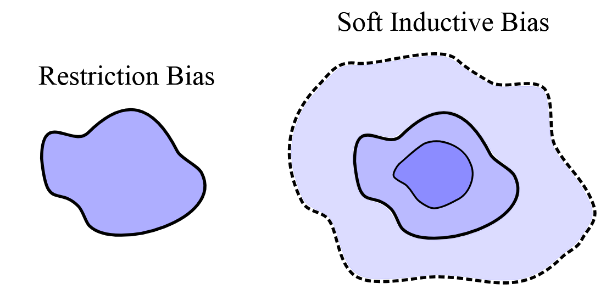

Summary
The ICML 2025 paper Deep Learning is Not So Mysterious or Different by Wilson (Wilson 2025) reviews literature on the generalization properties of overparameterized neural networks and argues that soft inductive bias is a key concept for understanding their generalization behavior.
Double Descent and Benign Overfitting
Double descent and benign overfitting are phenomena observed in neural networks, where generalization (i.e. prediction performance on the test set) improves as the number of model parameters increases—even after the model perfectly fits the training data. The classical double descent curve, illustrated below, shows test error decreasing, then increasing, and then decreasing again as model capacity grows.

The left side of the curve aligns with classical statistical learning theory: increasing model complexity (e.g. through more parameters) initially reduces bias but eventually leads to overfitting and increased test error. However, contrary to this traditional view, further increasing model capacity can improve generalization, a phenomenon that challenges the old bias–variance tradeoff.
Inductive Bias
Inductive bias refers to assumptions or constraints that restrict the model class within the broader universe of possible functions. For example, linear regression imposes a hard inductive bias by limiting the hypothesis space to linear functions, thereby excluding polynomial or other nonlinear models. Penalized regression methods, such as LASSO, further modify the model class by emphasizing sparsity, imposing what can be viewed as a soft inductive bias—they prefer simpler models but do not outright exclude complex ones.

Model Complexity
A central point in Wilson (2025) is that model complexity is not necessarily tied to the number of parameters. An overparameterized model can still be “simple” in an information-theoretic or geometric sense. One useful metric is the effective dimension of a matrix, defined as:
\[ N_\text{eff}(A) = \sum_i \frac{\lambda_i}{\lambda_i + \alpha}, \] where \(\lambda_i\) are the eigenvalues of matrix \(A\), and \(\alpha\) is a regularization parameter. Intuitively, a full matrix may still have low effective dimension (e.g. if most eigenvalues are small), while a sparse matrix could have higher effective dimension. Thus, counting parameters alone does not reliably reflect model complexity.
Main Argument
The central claims of Wilson (2025) can be summarized as follows:
- A model with more parameters may be simpler under appropriate complexity measures (e.g. effective dimension or compressibility).
- Soft inductive bias steers the model toward simpler solutions within a rich hypothesis space.
- Neural networks naturally impose soft inductive biases, increasingly so as their size grows.
Moreover, generalization can be rigorously captured by PAC-Bayes and countable hypothesis bounds, which upper bound the expected risk as the sum of empirical risk and a complexity penalty—often expressed as model compressibility or description length. This theoretical framing accommodates models with millions or billions of parameters.
Loose Thoughts
Regression Penalty
In Section 2 of Wilson (2025), a polynomial regression model \(f(x, w) = \sum_j w_j x^j\) is trained with a loss function:
\[ L(w) = - \log p(y|f(x,w)) + \sum_j \gamma^j w_j^2, \qquad \gamma > 1. \] This introduces a regularization term that penalizes higher-order terms exponentially more, encouraging simpler functions even within a flexible function space. This differs from standard L1 (LASSO) or L2 (Ridge) regularization, which treat all coefficients uniformly. Conceptually, this approach resembles kernel ridge regression, where the RKHS norm acts as a complexity penalty. The analogy to penalizing higher-order terms can likely be formalized via the spectral interpretation of the RKHS norm.
Soft vs. Hard Inductive Bias
A recurring theme of the paper is that soft inductive bias is often preferable to hard inductive bias, particularly in the context of neural networks. This raises interesting questions in the domain of physics-informed machine learning (PIML). For instance, Physics-Informed Neural Networks (PINNs) apply soft physical constraints via collocation points, while operator learning methods (e.g. DeepONets or FNOs) often encode more rigid physical assumptions—effectively imposing harder inductive biases. There are also approaches that encode PDE structure directly into GP kernels.
It would be fruitful to explore how varying degrees of inductive bias softness influence generalization and extrapolation in PIML. For example, do soft constraints help in the presence of approximate symmetries, while hard constraints work better in strictly governed physical regimes?